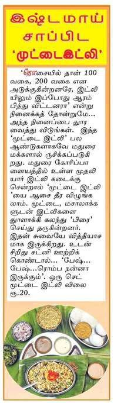

Most Madurai idly shops serve idli with sambar and chutney. At Mudaliyar Idly Kadai, the idlis are also cut into pieces and fried on the tawa with egg and masala. That is muttai idli (முட்டை இட்லி), and it is the dish the kadai is best known for.
How muttai idli is made
Freshly steamed idlis are cut into pieces. They go onto a hot tawa with beaten egg and masala, and are tossed until the egg coats every piece. The dish is served hot with chutney on the side. It is soft inside, a little crisp at the edges, and spiced throughout.

In the press
A Tamil newspaper column titled “இஷ்டமாய் சாப்பிட ‘முட்டை இட்லி’” sent readers to the Mudaliyar kadai at Goripalayam for its muttai idli. Back then a set cost ₹20. The kadai was also featured by Kumudam, Vasantham TV Singapore and Kairali TV.
Muttai idli at Melamadai
The Goripalayam premises were acquired for the bridge construction, and the dish moved with the restaurant to Pandi Kovil Ring Road. It now comes in four versions:
| Muttai Idli | ₹130 |
| Chicken Muttai Idli | ₹300 |
| Prawn Muttai Idli | ₹330 |
| Mutton Muttai Idli | ₹350 |
For something that isn't fried, try the Idly Corner: plain idly, sambar idly, ghee podi idly and chilli idly.